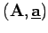
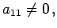
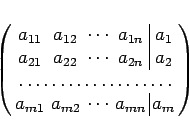
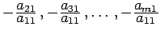
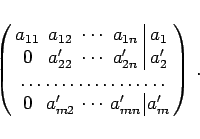
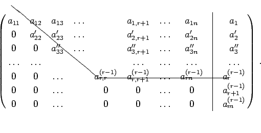

Inhalt Index DeskTop Bronstein

 Lineare Algebra Lineare Gleichungssysteme Lösung linearer Gleichungssysteme Gaußscher Algorithmus
Lineare Algebra Lineare Gleichungssysteme Lösung linearer Gleichungssysteme Gaußscher Algorithmus


Der erste GAUSS-Schritt wird an der erweiterten Koeffizientenmatrix  demonstriert:
Es sei  wenn nicht, dann werden entsprechende Gleichungen vertauscht. In der Matrix
|  | (4.115a) |
werden die Glieder der 1. Zeile der Reihe nach mit  multipliziert und die Ergebnisse zur 2., 3.,..., m-ten Zeile addiert. Die umgeformte Matrix hat dann die Form
|  | (4.115b) |
Die (r - 1)-malige Anwendung dieses GAUSS-Schrittes liefert
|  | (4.116) |